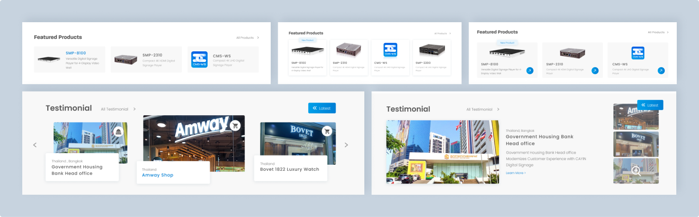

專案背景
CAYIN
鎧應科技是一家專注於設計數位廣告看板播放器、以及播放軟體的一家科技公司。
企業識別標誌在多年前便已修改、改用其他配色，但官網首頁仍持續使用原有設計，因此決定在公司即將推出新產品系列前進行改造，讓原先就認識或是未來新接觸的客戶都能在進入官網時有更好的體驗。
問題提出及假設
橫幅是對網站來說重要的宣傳工具，但在原設計中僅將文字及視覺元素做成一張圖片，不僅影響SEO，也缺乏明確的連結提示，無法有效引導使用者了解更多產品資訊。
客戶案例對於銷售上有十分大的幫助，為良好的廣告及實際應用展示，但是在原先的首頁不僅位於頁面下方、且只佔了畫面中 1/3 的份量，視覺上也跟兩側元件擁有相似的外觀，造成客戶案例在首頁中的醒目度不足，難以有效達到宣傳目的。
原設計採用黃色、灰色配色，與現有的公司 LOGO 配色的藍色、黃色不符，且設計風格無法使人聯想到數位產業。
* 下圖為原先的設計
專案目標
除了更改用色之外也希望優化資訊架構及 UI/UX 設計，希望更有效的推廣產品並讓使用者留下好的印象。
希望藉此機會同時建立設計系統，不只是首頁，而是讓整體官網擁有統一的視覺設計、強化企業識別。
設計提案
針對問題點及專案目標，最終產出了幾種設計提案與團隊及主管進行討論及決議，各個內容區塊通常會設計 2 種以上的提案。可以看到下圖中包含有「特色產品」以及「客戶案例」，「特色產品」最終以右側的設計做為定案，主要原因是: 1. 產品照片比例適中，2. 連結樣式特別，較能吸引使用者進行互動；而「客戶案例」最終也是以右側的設計做為定案，主要原因是: 1. 不對稱比例設計較能吸引使用者目光停留在此區域，2. 使用者在不用進入頁面的情況下，就能獲取較多的資訊。
